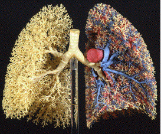
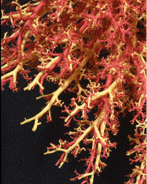
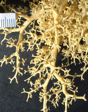

| Some of the most visually striking examples of fractal forms are found in physiology: The respiratory, circulatory, and nervous systems are remarkable instances of fractal architecture, branches subdividing and subdividing and subdividing again. |
| Nice pictures are provided in Goldberger, Rigney and West. |
| Although no clear genetic, enzymic, or biophysical mechanism yet have been shown to be responsible for this fractal structure, few doubt this. |
| Careful analysis of the lungs reveal fractal scaling, and it has been noted that this fractal structure makes the lungs more fault-tolerant during growth. |
| Here are three pictures of lung casts, some with the circulatory system casts included. These pictures were provided by Dr. Ewald R. Weibel. |
|  |  |  |
The heart is filled with fractal networks: the coronary arteries and veins, the fibers binding the valves to the heart wall, the cardiac muscles themselves, and the His-Purkinje system.
| In addition to falut-tolerance during growth, fractal branching makes available much more surface area for absorption and transfer in bronchial tubes, capallaries, intestinal lining, and bile ducts. |
| Kalda has proposed a fractal model of the blood vessel system that achieves a homogeneous oxygen supply throughout the body. |
| Also, the redundancy of fractal structures make them robust against injury. For example, the heart can continue to function even after the His-Purkinje system has suffered considerable damage. |
| From his work on the ability of fractal drums to damp vibrations, Bernard Sapoval deduced another advantage of the fractal character of the circulatory system: "the fractal structure of the human circulatory system damps out the hammer blows that our heart generates." "The heart is a very violent pump, and if there were any resonance in blood circulation, you would die." |
| Fractals may save our lives every minute. |
Here are some casts of animal lungs.
| Finally, we note the body exhibits dynamical fractals. |
| For example, it is well-known that healthy heartbeats are chaotic rather than regular. |
| A careful plot of heart rates over several time scales reveals self-similar scaling (Goldberger, Rigney and West). |